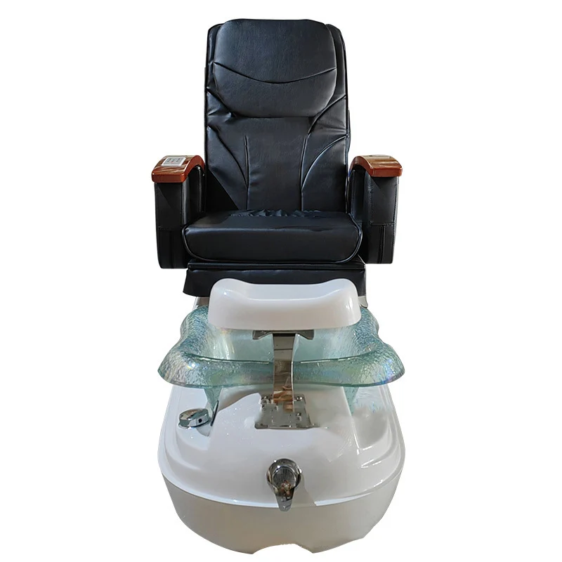

Your first fungal toenail care visit: what actually happens
By a KuuStore nail technician, Published November 14, 2026, Last reviewed November 14, 2026
Most first-time clients, in Hialeah, in Miramar, all over Miami-Dade, tell us the same thing when we arrive: “I kept putting this off because I was embarrassed.” Put that down. A thickened, yellowed toenail is one of the most common things our technicians see, and a first visit is a calm, practical hour. Here is exactly how it goes, step by step, so there are no surprises.
The short answer: A first visit takes about an hour at the shop. We look at every nail and talk plainly about what cosmetic care can and cannot do, clean and shape the affected nails with sanitized equipment opened in front of you, and leave you a written aftercare routine. Basic visits run $75 to $100. Premium visits run $150 to $200 and add a fuller cosmetic restoration pass plus an aftercare kit. This is cosmetic care, not medical treatment, if a nail needs a doctor, we tell you, and we do not sell you the visit.
Before we arrive
Almost nothing is on you. Have a clean towel, a chair with good light, and bare feet ready, and take off old polish if you can. We bring the equipment. If you have diabetes or circulation problems, tell us when you book, some feet should see a doctor before they see us, and we would rather say that on the phone than at your door.
Step one: we look, and we talk
Your technician looks at every toenail, not just the worst one: the colour, the thickness, how brittle the edges are, and whether more than one nail is affected. Then comes the honest conversation. Toenails grow slowly, so improvement is measured in months as healthier nail grows in, anyone who promises you a transformed nail in one visit is selling you something. What one visit does do: cleaner, thinner, better-shaped nails that sit more comfortably in your shoes, and a routine that gives the new growth its best chance. Pain, swelling, redness, or a nail that is getting worse quickly means a doctor first, always.
Step two: cleaning and shaping
Sanitized equipment is opened and prepared in front of you. The affected nails are cleaned carefully, thickened areas are reduced gradually, a little at a time, never forced, and the nail is shaped so its edges do not catch or press. There is no cutting into live tissue and no digging under the nail. If polish comes up, we will usually suggest a stretch of bare nails so you can watch how the nail changes month to month; polish hides colour, not condition, as our fungal toenail myths post explains.
Step three: your aftercare routine
Before we leave, your routine is written down: keep the nails clean and dry, change out of damp socks, let shoes dry fully between wears, and trim straight across as the nail grows. Premium visits include an aftercare kit to make that routine easy to keep. November is the start of South Florida’s drier season, which makes it the easiest time of year to build the habit before the summer humidity tests it.
Watch the kind of work a visit involves
This tutorial shows a professional doing the same careful work on a badly affected toenail, slowly, with no shortcuts:
What the video shows, in plain words: A nail-care specialist works on a thickened, discoloured toenail. She trims the free edge first, then reduces the thickness gradually with a small electric file, cleaning debris from around the nail as she goes. Nothing is rushed and nothing is forced. The nail ends the session thinner, cleaner and smoother than it started, and she is plain that the client keeps the result with home care between visits, including a stretch without polish so the nail can be watched. That patience is the whole method, and it is the same one your KuuStore technician follows.

What it costs, and how to book
Basic care is $75 to $100; Premium is $150 to $200, confirmed exactly at booking before anything is charged. As with every KuuStore service, 70% of your payment goes to your technician. The full service description is on our fungal toenail care page, and if you have toenail fungus, we can get you covered the correct way: carefully, honestly, and at the shop.